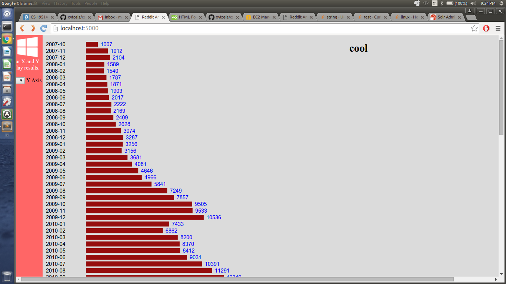
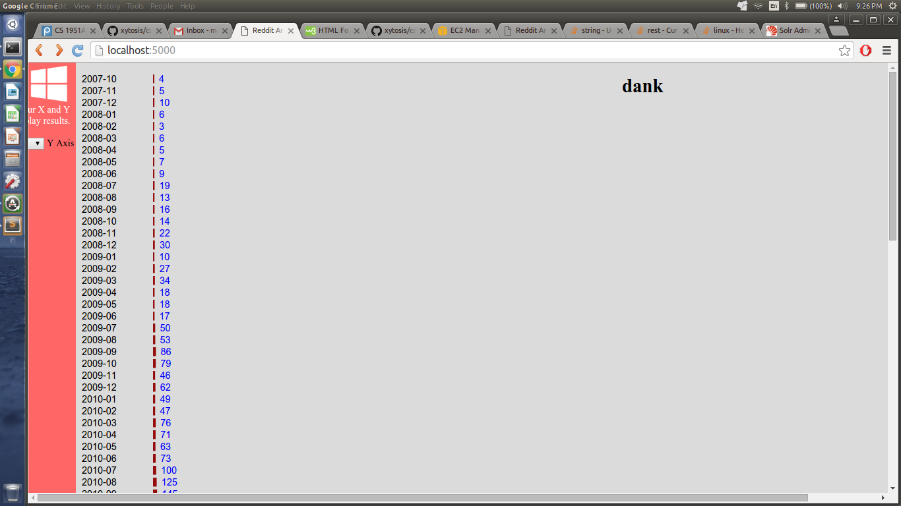

Members
The members of this group are mjzhu, bp12, eh49, and amai.
What We Did This Week
Spark
For spark, we deleted our old single slave cluster and created a cluster with 4 slaves. We were able to get spark jobs running on the cluster that use http calls to get comments from Solr and perform simple word counts on the comments. In order to get our Spark jobs running within the job-server, we need to add it as a dependency to the sbt project containing the Spark jobs then modify the Spark jobs to implement the job-server interface. This modification will be minimal and should not take very much work.
Solr
We are still in the process of uploading all the Reddit comment dataset. We ran into a problem where we could not download the Solr data efficiently, but we believe this is due to our instance's micro size. We will upgrade our instance to large to see if this increases download speed.
Flask
We have created more visualizations using D3 and have facilitated a connection from the Flask app to the Spark job server.
We created a sample visualization that uses stored data in order to display the relative size of subreddits to the user. More impressively, we set up a visualization that allows a user to dynamically choose a word or phrase, and we graph the usage of that word or phrase over time. This visualization calls a flask handler that directly queries Solr and gets the number of instances during each time period.
Here is a screen shot of the word "cool"

Here is another one of a less popular word

This is the raw number of comments we found with that word in it. Remember, we sampled about 1/5 of reddit comments, so these values are relative. Also, reddit is rapidly growing, so each word will naturally increase in usage. We plan to add a visualization that shows the relative increase in popularity of a word. You can play with our current webapp
here.
Machine Learning
We have implemented a few machine learning algorithms for Spark, and we have to connect them with Spark by figuring out how to run a Spark job. One example algorithm is the Flesch-Kinkaid reading level algorithm, for which we have code written in Scala to integrate with Spark, and the code can calculate the number of syllables within each Reddit comment, along with number of sentences and words. In addition, we are looking over how to use Spark's built-in LDA (Latent Dirichlet allocation) algorithm for analyzing topic models related to our Reddit comments. We are also working on writing a few others like sentiment analysis that we can plot in our visualizations graph.